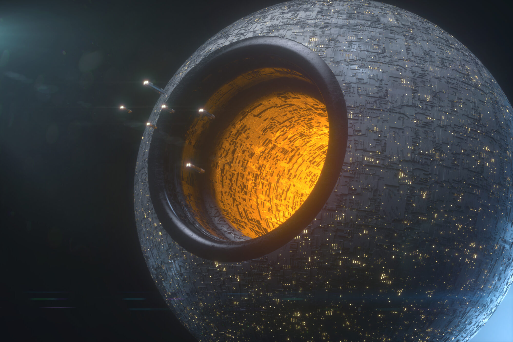

Rocket Car.
Regie statt Zufall.
Ein Raketenauto rast über einen ausgetrockneten See, die Kamera fährt die ganze Zeit mit – und am Ende zeigt sich, wer sie gefahren hat. Ein KI-Spot, bei dem Kamera, Bewegung und Timing nicht dem Zufall überlassen sind, sondern aus einem 3D-Blockout kommen.
Der Gag sitzt
im Kamerawagen.
Ein schwarzes, nadelförmiges Raketenauto rast mit 900 km/h über einen ausgetrockneten See. Am Ende stellt sich heraus, dass der Kamerawagen, der die ganze Zeit mitgehalten hat, ein ganz normales Familienauto ist: ein weißer Dacia Bigster.
Der Gag ist eine Hommage an einen klassischen Autospot, in dem sich eine Sportlimousine als Kamerawagen entpuppt. Mit dem Bigster funktioniert er sogar besser: Bei einem Sportwagen erwartet man Tempo, bei einem Familien-SUV nicht. Deshalb endet der Film mit dem Dacia-Claim „einfach, robust, smart“ – und einem kleinen Nachsatz: „und schnell“.
Das Raketenauto ist frei erfunden, mit Startnummer 1300 und fiktiven Sponsoren wie „VELOX Aerospace“. Der Film ist ein freies Eigenprojekt, kein Auftrag von Dacia.
Fünf Einstellungen,
62 Sekunden.
Eine Kette
für jede Einstellung.
Erst die Kamera,
dann das Bild.
Bevor auch nur ein KI-Bild entstanden ist, habe ich den ganzen Film als grobes 3D-Blockout in Blender gebaut. Das Raketenauto ist darin ein schwarzer Körper mit Heckflosse, der Dacia ein Quader, die Fahrer sind Gliederpuppen. Mehr braucht es nicht: Das Blockout bestimmt Kamera, Bewegung und Timing. Wie die Dinge aussehen, kommt später aus den Referenzbildern.
Neu war, wie ich Blender bedient habe: Über eine MCP-Schnittstelle hatte Claude direkten Zugriff auf die Szene. Ich habe beschrieben, was ich will – „das Raketenauto muss hinter dem Kamerawagen fahren“, „ab Frame 970 darf die Kamera nicht mehr wackeln“ – und Claude hat Szenen, Keyframes und Kameras per Python angelegt und gerendert. Drei Dinge haben sich bewährt:
- Abgleich mit dem Vorbild. Die Begleitfahrten habe ich Bild für Bild neben den Original-Spot gelegt und Abstand, Kamerahöhe und Seitenversatz angepasst.
- Wackeln schon im Blockout. Das Vibrieren bei 900 km/h steckt bereits als Rauschen in der Kamera-Animation. Seedance übernimmt es aus dem Blockout-Video.
- Volle Sekunden. Jede Einstellung ist exakt eine ganze Zahl an Sekunden lang. Seedance arbeitet nur mit ganzen Sekunden – so passt später alles ohne Umrechnen in den Schnitt.
Quader statt Dacia,
Puppe statt Fahrer.
Ein Aussehen,
in jeder Einstellung.
Die Referenzbilder legen fest, wie alles aussieht – und zwar in jeder Einstellung gleich. Gearbeitet habe ich in einem Space in Magnific: alle Referenzen, Blockouts und Video-Generatoren als Knoten auf einer Fläche, miteinander verbunden.
Eine Regel hat viel Zeit gespart: Die Namen der Referenzen im Prompt sind identisch mit den Dateinamen, etwa „@RocketCar_01_side“. So weiß das Modell immer genau, welches Bild gemeint ist.
- Das Raketenauto als Sheet mit fünf Ansichten – Seite, vorne und hinten schräg, frontal, von oben – dazu ein Cockpit-Bild mit Pilot. Wichtig war ein Panel über die volle Breite für die Seitenansicht, sonst wird das Fahrzeug zu kurz und plump.
- Der Fahrer des Dacia als Sheet mit fünf Panels: von vorne, seitlich, hinten, mit Sturmhaube und ohne.
- Der Dacia Bigster aus sechs Fotos aus verschiedenen Blickwinkeln.
- Startbilder für die ruhigen Einstellungen, direkt gebaut – mit dem Blender-Layout als Vorlage für den Bildaufbau.
Das ganze Projekt
auf einer Fläche.
Zwei Wege
durch Seedance.
Referenzen + Blockout
- Für die schnellen Fahrten
- Seedance übernimmt Kamerafahrt, Timing und Wackeln aus dem Blockout-Video und das Aussehen aus den Referenzbildern. Das hat erstaunlich präzise funktioniert.
- Der Staub
- Ohne genaue Beschreibung setzt Seedance Staubwolken irgendwo ins Bild, sogar vor das Auto. Daraus wurde ein fester Textbaustein für jede Fahrt: Staub nur am Heck, flach am Boden, etwa so hoch wie die Heckflosse – vor dem Auto ist die Luft klar.
Startbild
- Für die ruhigen Einstellungen
- Wenn die Kamera steht oder kaum fährt, hält ein gutes Startbild den Bildaufbau am zuverlässigsten.
- Entweder – oder
- Die beiden Arbeitsweisen schließen sich gegenseitig aus: Referenzbilder plus Blockout-Video oder ein Startbild. Beides zusammen geht nicht. Welche Variante, hing von der Einstellung ab.
25 Anläufe
für eine Pointe.
Die Enthüllung des Kamerawagens ist die Pointe des Films – und sie hat mit Abstand am meisten Arbeit gemacht: rund 25 Generierungen, bis eine Version gepasst hat. Der Fahrer kniet am Kamera-Rig des Dacia, stoppt die Aufnahme, steht auf und geht jubelnd zum Raketenauto. Gleichzeitig schwenkt die Kamera und gibt das Raketenauto im Hintergrund frei.
Daraus habe ich vier Dinge gelernt:
- Bilder schlagen Text. Die Modelle glauben ihren Referenzbildern mehr als jedem Prompt. Zeigt kein Bild flach liegende Bremsschirme, stehen sie im Video aufgebläht im Wind. In der Luftaufnahme lagen sie erst am Boden, als ich das Wort „Fallschirm“ weggelassen und die Schirme als flach liegenden Stoff beschrieben habe.
- Was nicht im Startbild ist, wird erfunden. Taucht ein Objekt erst während der Kamerafahrt auf, kennt das Modell sein Aussehen nicht. Bei einer Enthüllung ist genau das das Problem.
- Geometrie gehört ins Blockout, nicht in den Text. Wo welches Fahrzeug steht und wohin es zeigt, lässt sich mit Worten kaum erzwingen. Jede Regel im Prompt hat das Modell in einem anderen Durchlauf wieder ignoriert.
- Gute Ergebnisse sind nicht reproduzierbar. Derselbe Prompt mit einem leicht geänderten Startbild liefert ein völlig anderes Ergebnis. Wer eine gute Version hat, sollte sie sofort sichern.
Der Rest passiert
im Schnitt.
Die Seedance-Clips kommen in 720p. Topaz hat sie auf 1080p hochgerechnet, danach lief alles in DaVinci Resolve Studio zusammen: Schnitt, Farbkorrektur, Titel und Ton.
- Hitzeflimmern. In der starren Totale am Anfang fehlte das typische Flimmern der heißen Luft, und kein Prompt hat es zuverlässig erzeugt. Also kam es in DaVinci dazu: eine leichte, animierte Verzerrung, am Horizont am stärksten. Bei einer starren Kamera ist das in der Postproduktion ohnehin besser steuerbar.
- Getrennte Spuren. Alle Geräusche stammen aus ElevenLabs SFX: Triebwerk, Wind am Mikrofon, prasselnder Sand, das Klappern des Kamera-Rigs. So lässt sich jede Ebene einzeln mischen.
- Kein Vorbeiflug. Weil die Kamera mit dem Raketenauto mitfährt, darf das Triebwerk nicht vorbeirauschen. Ohne den Zusatz „no doppler“ machen Sound-Modelle daraus fast immer einen Vorbeiflug.
- Der Abspann. Die Luftaufnahme trägt den Titel „DACIA BIGSTER – einfach, robust, smart“. Jedes Wort bekommt einen trockenen Klopfer mit leichtem Nachhall, dann folgt „und schnell“.
Schnitt, Ton
und Farbe.
Die Regie liegt
wieder beim Menschen.
Vor einem Jahr wäre dieser Film für mich ohne Drehteam, Wüste und Raketenauto Utopie gewesen. Ich komme vom Film und habe jahrelang mit 3D und CGI gearbeitet. Neu ist für mich nicht die KI an sich, sondern dass sich diese Welten jetzt wirklich verbinden lassen.
Das Blockout in Blender macht den Unterschied. Zum ersten Mal steuert man in einem KI-Film Kamera, Bewegung und Objekte selbst, nach der eigenen Vorstellung, statt zu prompten und zu hoffen. Ganz ohne Schweiß geht es noch nicht, wie die 25 Anläufe für die Reveal-Szene zeigen. Aber die Richtung ist klar.
Wie KI-Film in einem Kundenprojekt aussieht, zeigt der Keynote-Opener für SAP Pay.

Ein Spot, den man
nicht drehen kann?
KI-Film mit echter Regie: Kamera, Timing und Pointe nach Plan. Sprechen wir über Ihr Projekt.